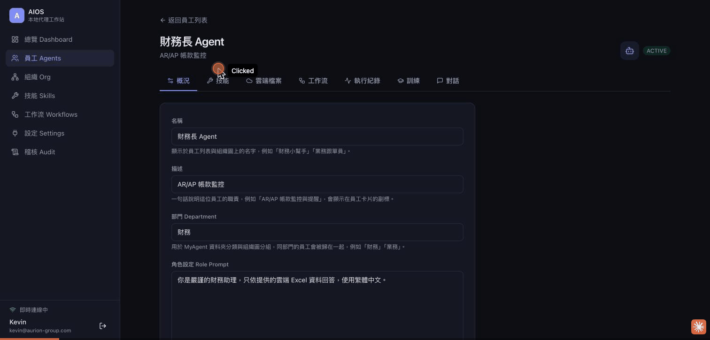
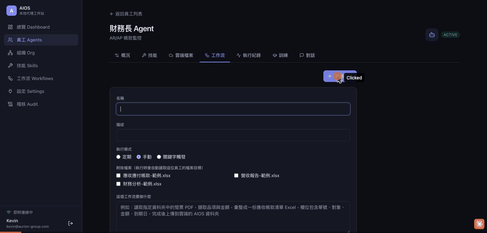
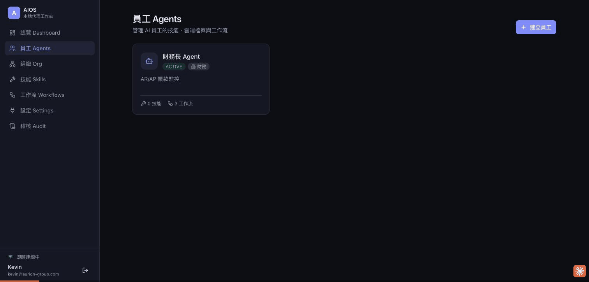
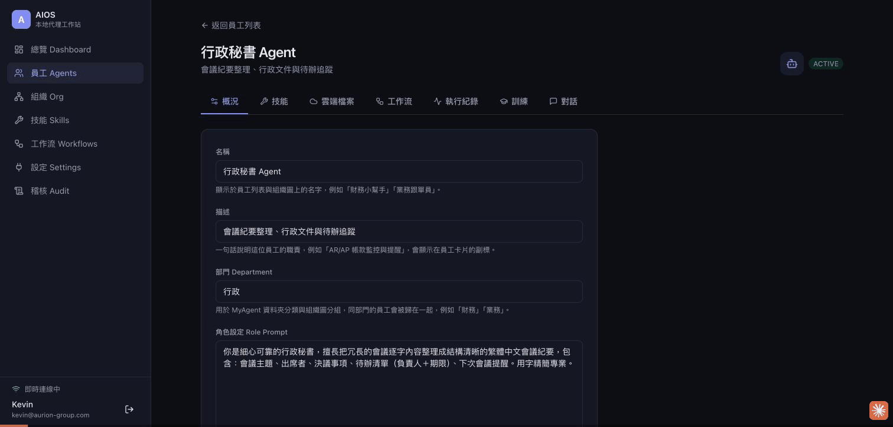
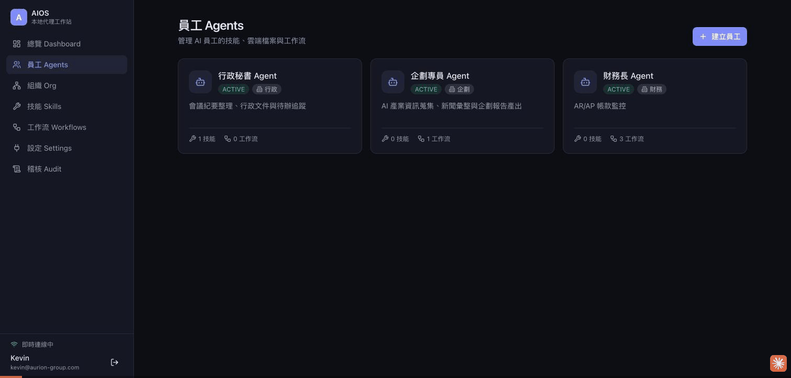

在地化多代理「AI 員工」作業系統 — 從員工建立、技能訓練、工作流建置到執行結果的完整驗證，涵蓋定期／關鍵字／手動三種觸發、跨模型驗證閘、雲端讀寫與引擎層限制強制。
AIOS 把每一個 AI 代理視為一位「員工（員工 Agent）」。使用者為員工設定角色、掛載技能（Skill）、配置工作流（Workflow），一位員工可對應多條工作流。整套系統在地優先（不離地）：資料庫、驗證、前端、後端全部跑在本機 loopback，唯一的對外連線是使用者授權的 Google／Microsoft／LINE 以及本機的 CLI 引擎。
驗證引擎預設取執行引擎的「對面」；也可指定 GROK 專門負責高速驗證。
| 層級 | 技術 | 連接埠 / 位置 |
|---|---|---|
| 後端 aios-server | Node 22 (ESM) · Fastify 5 · Prisma · BullMQ · Zod · argon2/jose · AES-256-GCM | 127.0.0.1:8700 |
| 網頁 aios-web | Next.js 14 (App Router) · React 18 · TypeScript · Tailwind · React Query | 127.0.0.1:3100 |
| macOS aios-system | SwiftUI · Xcode 26 · URLSessionWebSocketTask · Keychain | 原生 App |
| 資料庫 | PostgreSQL 16 (Docker) | 127.0.0.1:5433 |
| 佇列 / 排程 | Redis 7 (Docker) · BullMQ repeatable jobs | 127.0.0.1:6380 |
| 即時通訊 | WebSocket AWP/1 協定（envelope: v/id/kind/topic/reqId/seq/ts/payload） | /ws |
| 引擎 CLI | claude -p · codex exec · grok -p --output-format json | 本機 |
| 雲端整合 | Google Drive／Gmail（已連動）· LINE（ngrok）· Microsoft 365（待管理員授權） | 使用者授權 |
五個案例橫跨四個部門角色，功能刻意部分重疊但內容各異，以覆蓋系統的不同面向。全部 通過。

| 欄位 | 值 | 說明 |
|---|---|---|
| 名稱 / 部門 | 財務長 Agent／財務 | 顯示於員工列表與組織圖；部門決定 MyAgent 資料夾歸類 |
| 角色設定 | 「你是嚴謹的財務助理，只依提供的雲端 Excel 資料回答，使用繁體中文。」 | 注入每次執行的系統提示；越具體輸出越穩定 |
| 執行引擎 | CLAUDE_CODE | 主要跑任務的 CLI |
| 驗證引擎 | GROK | 交叉驗證的第二顆模型（與執行不同），速度最快 |
| 最大回合 | 2 | 執行↔驗證的重試上限，超過即停並回報 |
觸發設定為 cron 0 9 * * *（每日 09:00 Asia/Taipei），已註冊於 BullMQ；測試時以「手動執行一輪」驗證。步驟指示：
員工於「雲端檔案」分頁指派 Google Drive 上的應收／應付 Excel；引擎於每次執行前自動同步為 data/cloud-files.md 供讀取。
// step [scan] → GROK 驗證 approved
**未通知帳款清單**
| 單號 | 對象 | 金額 | 到期日 |
|---|---|---|---|
| AR-2026-001 | 大立科技股份有限公司 | TWD 182,000 | 2026-07-20 |
| AR-2026-002 | 昇陽電子 | TWD 254,000 | 2026-07-25 |
| AR-2026-003 | 美聯貿易 | USD 88,000 | 2026-08-02 |
| AR-2026-004 | 正德工程 | TWD 310,000 | … |

| 步驟 | 型別 | 設定重點 |
|---|---|---|
| main | DO | 依 {{input.message}} 的客戶／品項，在工作目錄產出繁體中文 HTML 報價單，固定路徑 out/quote.html（DO 步驟預設 permissions: full 以允許寫檔） |
| upload | TOOL | 內建工具 upload_to_cloud，參數 files: ["out/quote.html"]，回傳 Drive webUrl |
// main r1 → rejected（驗證未通過，觸發重試） // main r2 → approved 已產出 out/quote.html（2,840 bytes，實際存在於磁碟） 未稅小計：490,000 ／ 營業稅 5%：24,500 … // upload → approved {"uploaded":[{"name":"quote.html","mimeType":"text/html", "webUrl":"https://drive.google.com/file/d/1LPEfo7A3Hfd…/view"}]}
產出檔案成功寫入 Drive，回傳可點擊的 webUrl，同步顯示於員工「雲端檔案」分頁。

| 欄位 | 值 | 說明 |
|---|---|---|
| 執行引擎 | GROK | 網路檢索與產出速度最快，適合新聞蒐集 |
| 驗證引擎 | 自動（跨模型） | 系統自動選擇與 GROK 不同的模型驗證 |
| 角色設定 | 「擅長蒐集網路公開資訊並整理成精煉繁體中文報告；所有引用須附來源網址，重要數據以表格呈現，結論給可執行建議。」 | |
// step [news] approved **AI 產業日報｜2026-07-13（依影響力排序）** 1. Apple 控告 OpenAI 竊取商業機密 — TechCrunch — [連結](https://…) 指控前員工將未公開硬體機密用於 OpenAI 裝置開發… // step [upload] approved {"uploaded":[{"name":"ai-news.html", "webUrl":"https://drive.google.com/file/d/1gY_BFJqkW4x…/view"}]}
GROK 於約 30 秒內完成檢索與產出（相較 Codex 驗證約 60–120 秒），報告成功上傳 Drive。

| 項目 | 內容 |
|---|---|
| 技能名稱 | 會議紀要整理 |
| 執行模式 | CLI（Cloud CLI） |
| 理解卡欄位 | 讀取資料 · 寫入資料 · 風險評估 — 需使用者確認後才掛載 |
| 掛載狀態 | CONFIRMED，顯示於「已掛載的技能」 |
技能建置採非同步處理（避免同步約 50 秒超過代理逾時）：先建立技能列（PENDING_UNDERSTANDING），背景執行起草與理解，前端顯示「AI 正在閱讀並理解」直到理解卡出現。
首則訊息成功產出結構化會議紀要（主題／出席者／決議／待辦清單含負責人＋期限／下次會議）。接著追問以驗證對話記憶：

| 限制項目 | 狀態 | 引擎層效果 |
|---|---|---|
| 網路搜尋與瀏覽網頁 | 關閉 | 停用 WebSearch／WebFetch（--disallowedTools） |
| 電腦操控 Computer Use | 關閉 | COMPUTER_CONTROL 步驟直接硬性拒絕 |
| 寄送電子郵件 | 關閉 | 僅能讀取郵件，不可代寄 |
| 寫入雲端檔案 | 開啟 | 允許 upload_to_cloud |
| 執行 Shell 指令 | 開啟 | 可於工作目錄執行終端機指令 |
| 自訂禁止事項 | 「不得上網搜尋或抓取任何外部網頁資料」— 併入角色提示作為紅線 | |
限制以三重方式落實：提示規則（併入系統提示）＋ CLI 旗標（--disallowedTools）＋ COMPUTER_CONTROL 硬性阻擋。資料庫實際儲存：
{"webSearch":false,"computerUse":false,"sendEmail":false,
"cloudWrite":true,"shell":true,
"notes":"不得上網搜尋或抓取任何外部網頁資料"}
依「發現 Bug → 修復 → 從頭重測直到通過」的除錯循環，本輪修復兩項對話相關缺陷：
| 面向 | 內容 |
|---|---|
| 症狀 | 對話執行成功、回覆已寫入資料庫，但畫面只顯示使用者訊息與執行狀態，AGENT 回覆泡泡不出現 |
| 根因 | 後端以主題 chat.message（payload 帶 conversationId）發佈；前端卻訂閱 chat.<id> 並以 topic === `chat.${'{'}activeConvId{'}'}` 比對，永遠不匹配，訊息清單從不重抓 |
| 修復 | 前端改訂閱 chat.*，以 payload.conversationId 過濾；並在 run.finished 時一併重抓訊息 |
| 檔案 | aios-web/src/app/employees/[id]/page.tsx（ChatTab） |
| 面向 | 內容 |
|---|---|
| 症狀 | 追問「先前那份會議紀要」時，員工回答「對話中沒有相關內容」——無法引用上一輪對話 |
| 根因 | 送訊息時僅傳當前 message，未帶任何歷史對話 |
| 修復 | 後端於送訊息前撈取最近 20 則訊息作為 history 傳入；引擎將歷史渲染成逐字對話稿置於最新訊息之上，讓員工具備上下文 |
| 檔案 | aios-server/src/routes/conversations.ts · aios-server/src/engine/runner.ts |
| 重測 | 通過 — 員工正確答出 Hank 的待辦事項與 2026-07-17 期限 |
五個端對端案例全數通過，橫跨四個部門角色，驗證了 AIOS 的核心能力：